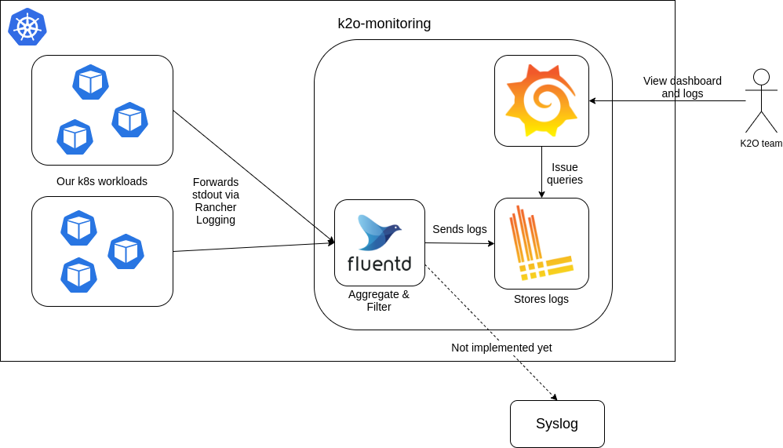
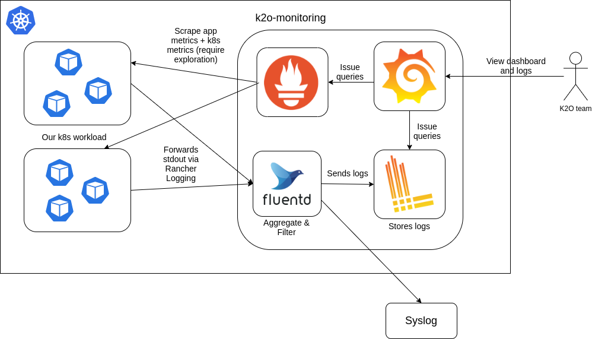

class: center, middle # Sharing on K2O Logging --- <style>.enlarge { font-size: 30px; }</style> # Objectives .enlarge[1) Overview of architecture] .enlarge[2) Basics of each component] (enough to get us going) .enlarge[3) Deployment] .enlarge[4) Future work] --- # Architecture  --- # Pros & cons of Rancher logging Auto-inclusion vs Too noisy --- # Fluentd - Logs forwarder -- - Input -> Filter -> Output -- - Uses plugins for input, filter, output (built-in & 3rd party) - Fluentd input plugin (built-in) - Loki output plugin (3rd party, Grafana) -- - Our config [demo .red[\+ warning]] -- - Why not Fluentbit? (like what I posted on Slack) --- # Loki - Lightweight logs store (as compared to Elasticsearch) by Grafana Labs - Logs are not tokenised and indexed -> logs searching is 100% runtime -- - How do we categorise our logs then? - E.g. "I want to only look at the logs of this particular service" -- - Use labels - Indexed, filtering with labels is fast -- - Increase storage and logs ingestion latency -- - Use sparingly, e.g. <br>Good: k8s namespace <br>Bad: requestId -- - So what do we use as labels, and how do we specify them? --- # Querying Loki - A query __must have log stream selector__ and (optionally a log pipeline) -- - log stream selector = use of labels [demo] - Can use regex -- - log pipeline = chain of actions on the logs selected (think Linux's pipe) [demo] - Line Filter Expression - Parser Expression (logfmt) - Label Filter Expression - ~~Line Format Expression~~ - ~~Labels Format Expression~~ - ~~Unwrap Expression~~ -- - Creating metrics out of queries [demo] ??? A bit more time on Loki, since we'll use it more often --- # Deployment - Deployed using Helm - I added Fluentd ontop of the `loki-stack` Helm chart provided by Grafana Labs - Persistence -- - Modify the dashboard? - Replace the `custom-dashboard.json` in the repo, push and you're good to go - Do keep a lookout for the deployment on Rancher though -- - What if I want to add a new dashboard? --- # Future work - Us developers to start using it in our workflow - `requestId` in our API error payload, and displaying it on FE - Prometheus - Tracing --  --- # Summary .enlarge[1) Overview of architecture] - Remove the noisy logs from our workloads .enlarge[2) Basics of Loki + Fluentd] - A basic understanding and mental model - Simple Loki queries .enlarge[3) Deployment of dashboards] - How it's done in a GitOps manner using Helm .enlarge[4) Future work] - Developers should use it - Adding Prometheus if there's time, let me share this sick pattern that the helm chart did